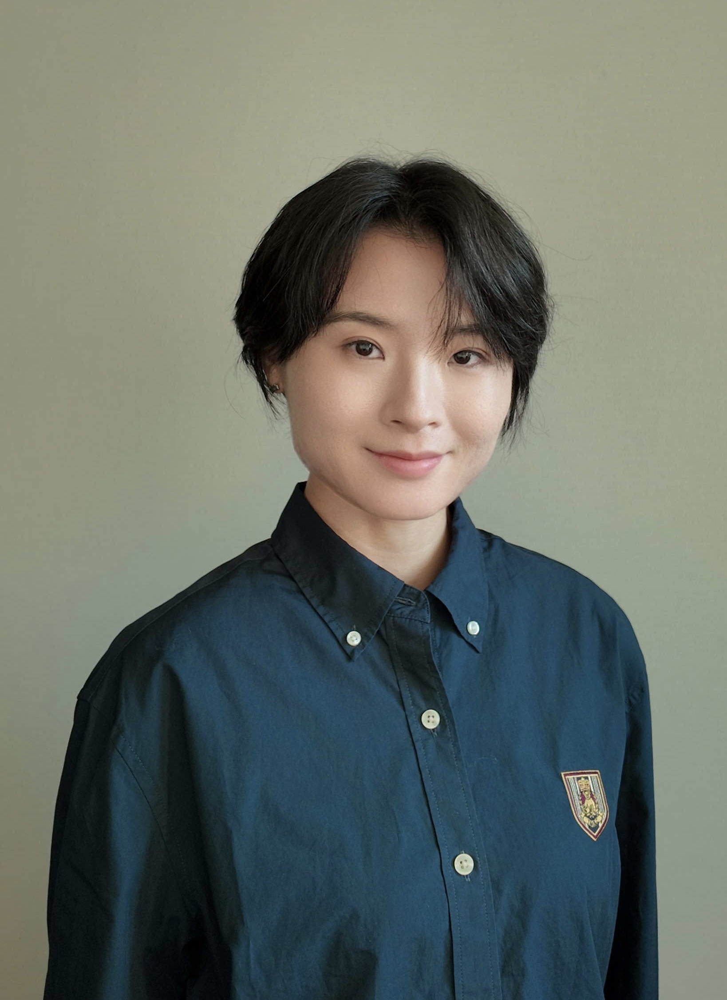
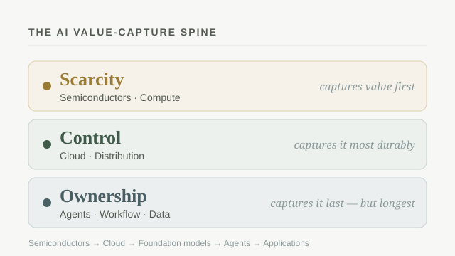
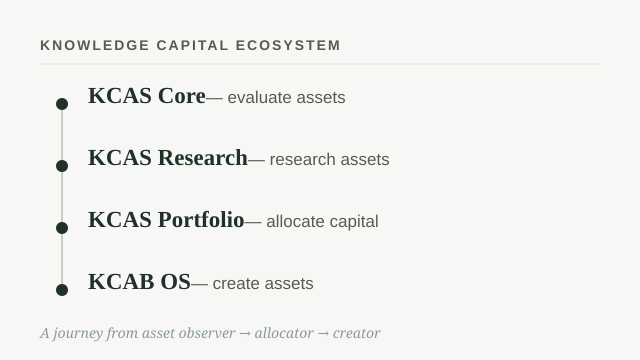
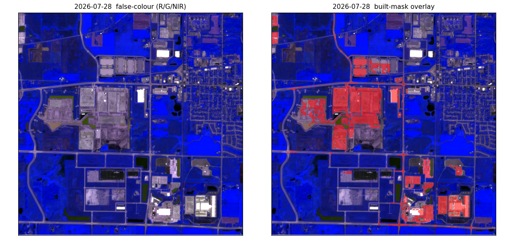
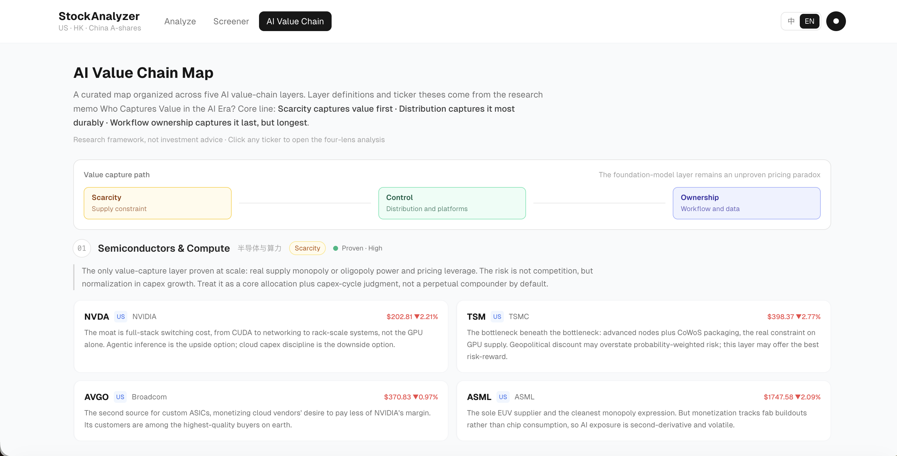
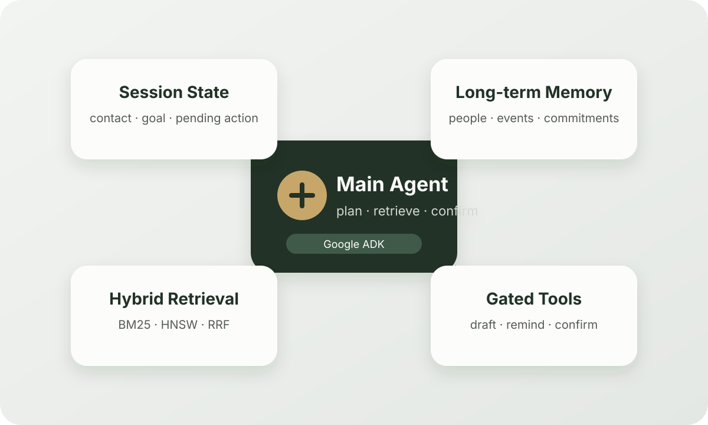
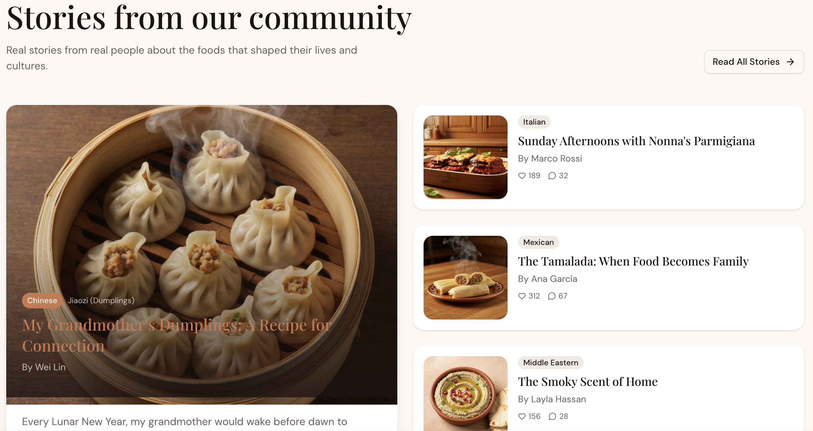
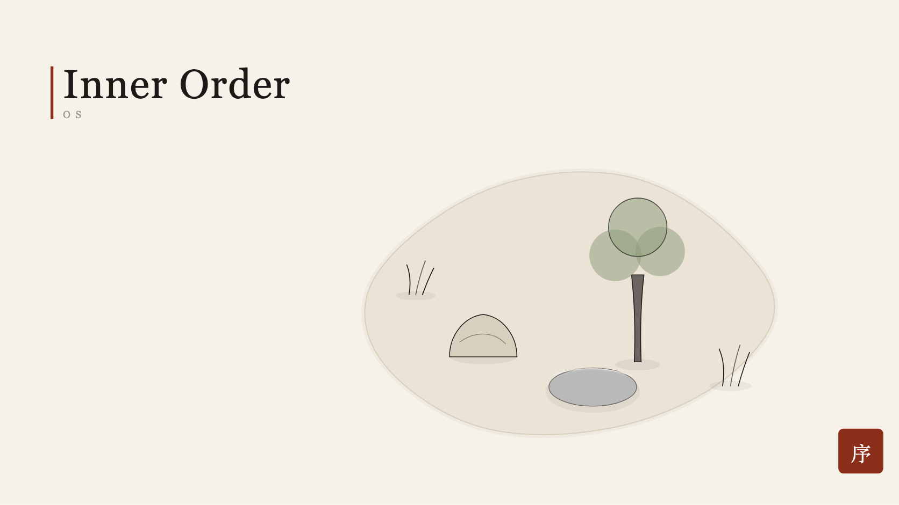
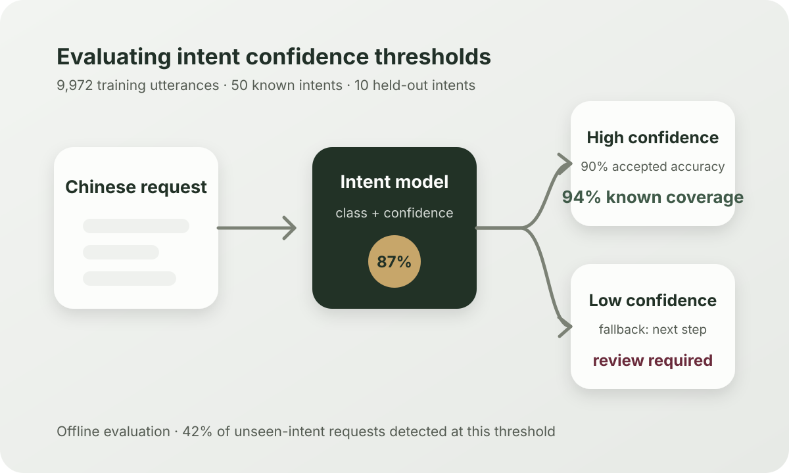
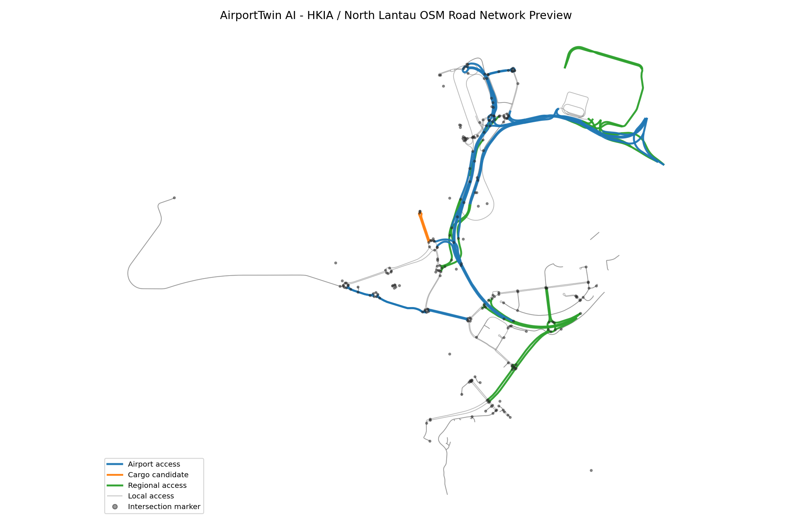

Start with the business question
Clarify who needs to decide, what outcome matters, and which constraints shape the choice. Turn an open-ended brief into a focused question, explicit assumptions, and criteria for a useful answer.
I'm Zijun Wang. I connect industry research, product thinking, and cross-functional execution to turn emerging technologies into clearer strategic choices and testable business opportunities.
Exploring CEO Office · Strategy & Operations · New Business roles

My background spans product management, data analysis, and quantitative research. I am now focusing that experience on AI and technology business strategy: understanding where value is created, which problems matter, and what a team should test next.
Since early 2026, I have independently studied the AI value chain across the US and China, from chips and cloud infrastructure to models and applications. I read company disclosures alongside industry material to connect technical developments with business models, competitive positions, and the assumptions behind a decision.
As a product manager and data analyst, I worked on more than six government digitalization projects and coordinated a team of over ten across engineering, data, design, and marketing. My work connected client requirements and shared KPIs with delivery, reporting, and recommendations for decision-makers.
I have also built and deployed four LLM applications independently. That hands-on work helps me judge what AI can deliver, make product trade-offs, and turn an idea into a working prototype. These are early product experiments, with user validation still ahead.
My foundation in geographic information science and NSF-funded research taught me to test assumptions, compare independent sources, and explain uncertainty. Python, SQL, and AI workflows support that work by making evidence easier to gather and examine.
Through Living Origins (生境志), I am developing an independent editorial brand around place, season, and craft. It is a practical exercise in positioning, research-led storytelling, and consistent publishing, starting with Miaofeng Mountain.
I am seeking CEO Office, Strategy & Operations, and New Business opportunities where I can contribute research and execution while growing into broader business ownership and, over time, general management or entrepreneurship. I work in Mandarin and English, speak conversational Cantonese, and am open to relocation and on-site work.
Areas of contribution
Clarify who needs to decide, what outcome matters, and which constraints shape the choice. Turn an open-ended brief into a focused question, explicit assumptions, and criteria for a useful answer.
Connect company disclosures, industry research, and customer context. Map the value chain and competitive alternatives, separate facts from interpretation, and identify the gaps that could change the conclusion. AI and data tools help with collection and analysis.
Compare options against customer value, feasibility, resource needs, and risk. Explain the recommendation in a clear strategic narrative: what to pursue, why it makes sense, and what evidence would change the view.
Translate the recommendation into a scoped pilot or delivery plan with responsibilities, milestones, and success measures. Coordinate across functions, use prototypes where useful, and review results before committing more resources.
Self-directed research & product experiments
Study the US and China AI value chain, connecting developments in chips, cloud infrastructure, models, and applications with business questions. Review company disclosures and industry evidence; use scheduled agents to collect weekly updates and consensus data for my own research.
Built and deployed four LLM applications, owning the product concept, data design, implementation, and iteration. Projects include research tools and conversational products. Social Memory Copilot explores how source transparency and user control can make AI assistance more useful; its demo uses synthetic data and real-user validation remains a next step.
Living Origins · 生境志
Developing an independent editorial brand that traces the origins of everyday things through geography, plants, seasonality, and craft. Defined the brand positioning, visual identity, and editorial framework, with Miaofeng Mountain as the first field site and stories spanning roses, jasmine tea, and the people and processes behind them.
Built a reusable workflow connecting source research, evidence records, long-form writing, and platform-specific visual production. Created articles and carousel assets for WeChat, Xiaohongshu, and Instagram, with clear distinctions between verified facts, observations, and interpretation.
University at Buffalo, SUNY
Led the quantitative analysis for an NSF-funded study of community resilience during extreme winter storms. I worked with survey, behavioural, and spatial data to understand how location, information exposure, and online communities affect mutual-aid decisions.
Designed the analysis workflow from data preparation through modelling and validation, then translated the results into a clear account for the research team and the funder.
Beijing Yiyun Technology Co., Ltd.
Led business analysis for more than six government digitalization projects, mainly monitoring and early-warning platforms. Worked with clients to clarify requirements, define KPIs, and agree on consistent data and reporting rules so that teams could work from the same evidence.
Coordinated delivery across a team of more than ten in engineering, data, design, and marketing. Translated analysis into recommendations for technical and non-technical decision-makers, several of which were adopted. Used Python scripts and reusable SQL queries to replace repeated manual data pulls.
Beijing Satimage Technology Inc.
Used machine-learning classification and spatial analysis on large geospatial datasets for public planning and environmental assessment. The work included developing and validating satellite-based estimates that combined imagery with environmental indicators.
Managed delivery from the first client conversation through analysis, reports, presentations, and recommendations people could act on.
Independent research and product experiments, alongside earlier client and academic work. Each project shows the question, my contribution, and the current limits of the evidence.

Where does economic value accrue as AI develops? I study chips, cloud infrastructure, models, and applications across the US and China, using company disclosures and industry material to examine business models and competitive positions. Scheduled agents gather weekly updates and consensus data; I review the evidence and develop the interpretation. This is an ongoing independent research practice.

How should limited capital and attention be allocated? KCAS brings together four frameworks I use in personal research: separating asset quality from price, organizing evidence, comparing opportunity costs, and reviewing whether a project merits further effort. Making the reasoning explicit helps me revisit a choice when the facts change.
On GitHub →
Can satellite imagery add an independent signal to AI infrastructure research between quarterly disclosures? I am testing Sentinel-2 observations of US data-centre construction, checking site boundaries against county records and public acreage. Early observations broadly follow a public construction timeline, but 10 m imagery mixes roofs, roads, and parking. The method remains in development; its predictive value for reported capex has not yet been validated.
On GitHub →
Stock Analyzer brings US, Hong Kong, and A-share data into one workflow for fundamentals, valuation, technicals, and sentiment. I designed the product and data flow, including an S&P 500 screener and an AI value-chain map, to connect company-level analysis with an industry view. It is an independent tool for structuring company and industry research.
Live demo →
How can an AI assistant preserve useful context without taking control away from the user? I designed and built Social Memory Copilot to carry past conversations, commitments, and communication preferences into later interactions. Product choices include cited memory sources and user confirmation before agent-proposed updates, deletions, or reminders.
A small synthetic evaluation showed Recall@5 improving from 0.682 to 0.889 in the full local configuration, with 0.757 in the lighter deployed configuration, across 20 queries. The evaluation guides retrieval choices; real-user validation is the next step.
Live demo → On GitHub →
Bridge the Gap explores how AI translation and community knowledge can help people understand unfamiliar food and cultural practices. I designed the product around bilingual access and trust: answers are ranked by endorsements, confidence, and freshness, while community consensus can revise an AI label. The demo makes those product choices tangible; adoption has not yet been validated.
Live →
Inner Order OS explores a focused reflection experience: one question at a time, with relevant past entries available as context. I owned product design and implementation, including prompts and output checks. The product is deployed and preparing for alpha testing; external access is not yet open.
Live → Architecture →
For my master's thesis, I filtered 78,116 sustainability-related reviews from the Yelp Open Dataset, used LDA to identify themes, and scored sentiment with multilingual BERT. Those results seeded a 500-agent network model in Mesa. Across three scenarios and a no-intervention baseline, I tested a simple question: when does a sustainability message spread through a community, and when does it stop? I designed, implemented, and interpreted the study independently.

I fine-tuned a Chinese encoder on 9,972 training utterances across 50 intents, reaching 87% test accuracy on known intents. Ten additional intents were held out of training to evaluate how the model responds to unfamiliar requests.
At a selected confidence threshold, the model accepted 94% of known requests with at least 90% accuracy, while detecting 42% of unseen-intent requests. These results help define a routing policy and identify where additional checks are needed. A larger-model fallback or dedicated detection layer remains a next step.

AirportTwin AI is a GIS-to-3D prototype for the roads around Hong Kong International Airport and North Lantau. It cleans public OpenStreetMap data, creates scene-ready geometry, and organises the result into a USD-ready structure for future mobility simulation.
On GitHub →Analysed consumer reviews in Tableau to connect sustainability themes and sentiment patterns with practical KPIs and adoption recommendations.
Shaped requirements and solution designs for forest-fire and meteorological-risk systems, bringing multi-source data into dashboards and decision-support rules.
Interviewed stakeholders, mapped how the organisation actually worked, and turned those conversations into requirements and a staged implementation roadmap.
Designed a precision-irrigation concept that combines satellite observations, weather data, and expert rules into recommendations a grower could use.
Undergraduate research using hyperspectral imagery and machine learning to detect drought stress in winter wheat.
University at Buffalo, SUNY (USA)
Focused on spatial statistics, machine learning, and simulation. My thesis combined NLP analysis of 78,116 reviews with an agent-based model of how a message moves through a network; it became the foundation for much of the modelling work shown here.
Huazhong Agricultural University (China)
Remote sensing, cartography, spatial databases, and programming for geospatial analysis.
Central China Normal University (China)
Completed alongside my GIS degree, with a focus on the human side of spatial questions: how people, cities, and land use affect one another.
I'm exploring CEO Office, Strategy & Operations, and New Business roles in AI and technology companies. If your team needs someone to research a market, structure an ambiguous business question, or coordinate a pilot, I'd be glad to connect. I also welcome conversations with founders and potential collaborators. Email is the easiest way to reach me.